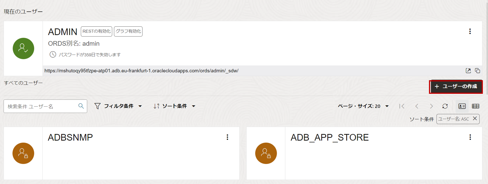
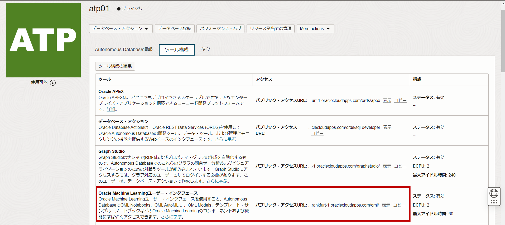
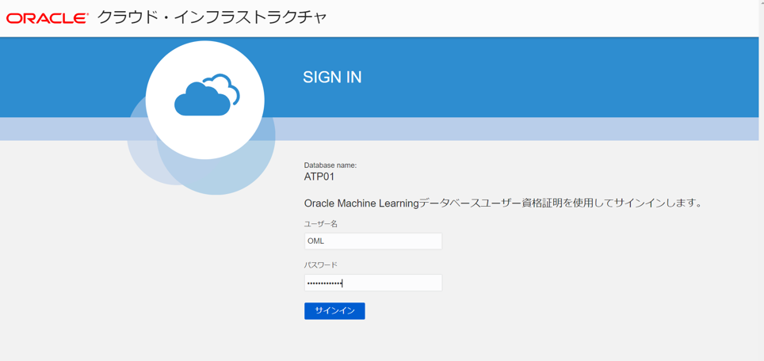
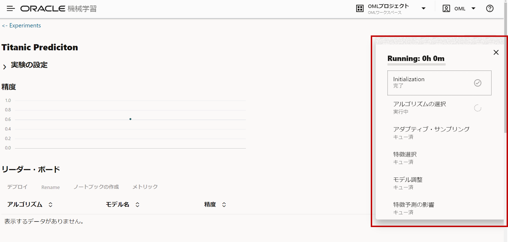
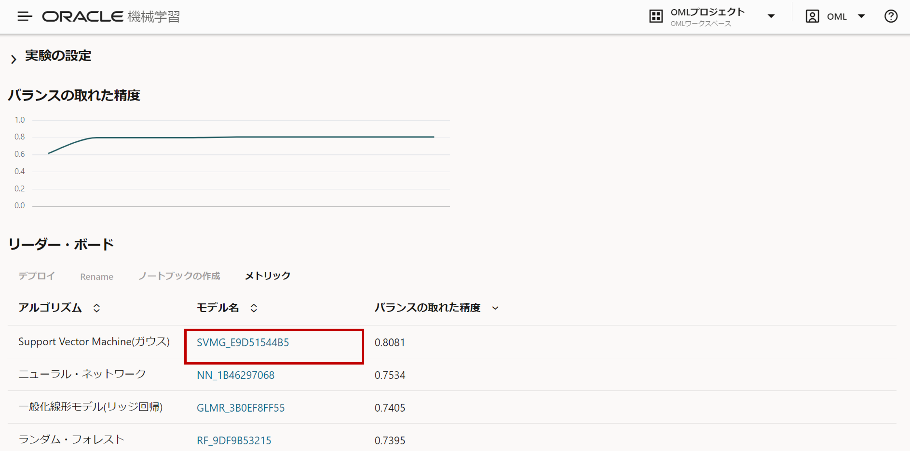
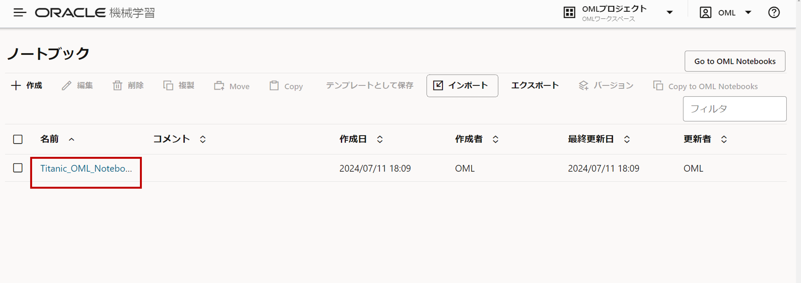
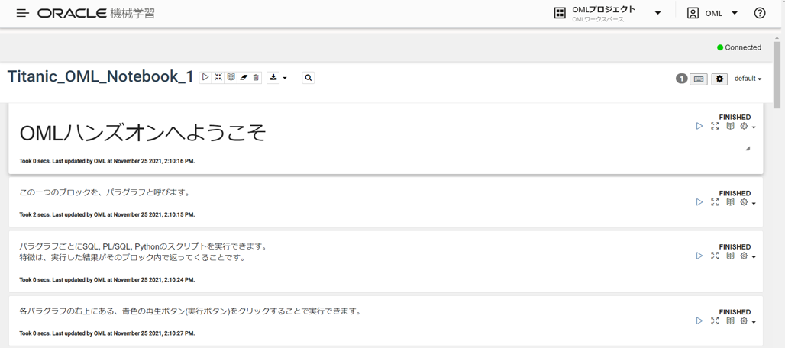
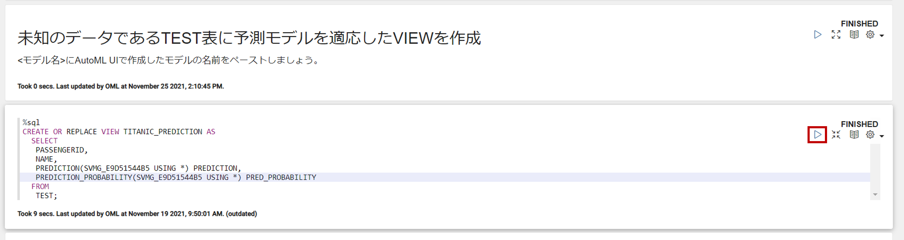
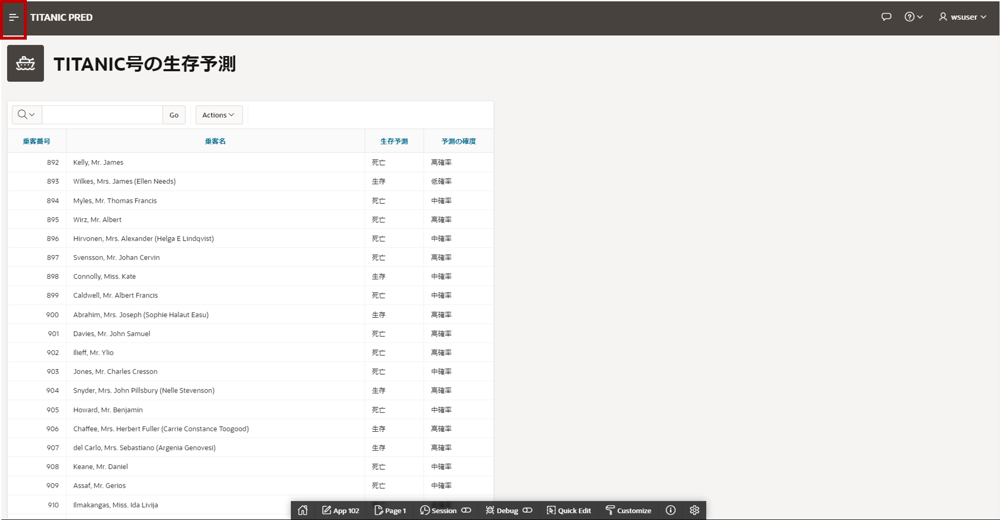

はじめに
この章では、Autonomous Databaseの複数の付属ツール(Database Actions、OML AutoML UI、OML Notebook、Oracle Application Express(APEX))を活用し、ワンストップの機械学習環境を体感していただきます。今回は、機械学習の題材として、タイタニック問題を扱います。タイタニックの乗客情報から乗客の生存予測を行うモデルを作成します。モデル作成後、そのモデルに実際に予測をさせて、更にその予測をアプリケーションでのレポートまで行います。データベースの中で機械学習のプロセスが完結しているOracleの機械学習へのアプローチを体験していただけると思います。
前提条件 :
- ADBインスタンスが構成済みであること
※ADBインタンスを作成方法については、101:ADBインスタンスを作成してみよう を参照ください。 - 以下にリンクされているZipファイルをダウンロードし、解凍していること
目次
- 1. OMLユーザ新規作成
- 2. Database Actionsでデータロード
- 3. OML AutoML UIで生存予測モデル作成
- 4. OML Notebookで予測をかける
- 5. APEXで予測結果をレポート
- 6. まとめ
- 7. 参考資料
所要時間 : 約60分
1. OMLユーザ新規作成
まずOMLを利用する権限を持つユーザをDatabase Actionsで新規作成していきます。
-
ADBインスタンスを作成しようで学習したDatabase Actionsを利用したインスタンスへの接続 を参照し、Database Actionsを起動し、Adminユーザーで接続してください。ツールタブから、データベース・アクションを開くをクリックしてください。
-
管理 > データベース・ユーザーをクリックしてください。
-
+ユーザの作成をクリックしてください。

-
OMLユーザの作成に必要な情報を入力して、ユーザの作成をクリックしてください。
- ユーザ名 = OML
- パスワード = Welcome12345#
- 表領域の割り当て制限 = UNLIMITED
- OMLをチェック
-
Webアクセスをチェック
- ユーザの作成をクリック
-
OMLユーザが新規作成されました。
-
画面右上のユーザ名をクリックし、ADMINユーザからサインアウトします。

2. Database Actionsでデータロード
-
OMLユーザでサインインした後、データ・ツール > データ・ロードをクリックします。
-
データの処理 > データ・ロード、データの処理 > ローカル・ファイルを選択し、次をクリックします。
-
ファイルの選択をクリックし、端末からtrain.csvとtest.csvを選択します。

-
緑色の実行ボタンをクリックし、データ・ロードの実行します。

-
完了をクリックします。

3. OML AutoML UIで生存予測モデル作成
-
Autonomous Databaseの詳細画面へ遷移し、サービス・コンソールをクリックしてください。
-
サービス・コンソールの開発 > Oracle Machine Learningユーザー・インターフェイスをクリックし、OMLユーザでサインインして下さい。

-
Oracle Machine Learningにサインイン後、画面左上のハンバーガメニュをクリックしてください。

-
ハンバーガメニュからAutoMLをクリックしてください。
-
+作成ボタンをクリックしてください。
-
名前にTitanic Predicitonと入力後、データ・ソースをクリックして下さい。

-
ポップアップ画面で、スキーマにはOML、表にはTRAINを選択した状態でOKをクリックしてください。

-
予測でSurvivedを目的変数として選択し、予測タイプが分類になっていることを確認後、開始 > より良い精度をクリックして下さい。
-
予測モデルが自動で作成されるのを待ちましょう。画面右側のポップアップで進捗を確認できます。

-
予測モデルが5つ自動で作成されました。後で使えるように、モデル名を1つコピーして任意の場所にペーストしておきましょう。
(例)モデル名 : SVMG_FBC6D30E68
4. OML Notebookで予測をかける
-
画面左上のハンバーガメニュをクリックしてください。
-
ハンバーガメニュからノートブックをクリックしてください。
-
ノートブックの画面で、インポートをクリックして下さい。Titanic_OML_Notebook.jsonを端末から選択してください。
-
ノートブックの画面で、インポートしたノートブック名をクリックして、ノートブックを開きます。
-
こちらが開いたノートブックの中身になります。下にスクロールして、未知のデータであるTEST表に予測モデルを適応したVIEWを作成という箇所に移動して下さい。
↓
-
下記のSQL文の<モデル名>に、任意のペースト済みのAutoML UIで作成したモデル名をペーストした後、右上の再生ボタンをクリックしスクリプトを実行して下さい。
CREATE OR REPLACE VIEW TITANIC_PREDICTION AS SELECT PASSENGERID, NAME, PREDICTION(<モデル名> USING *) PREDICTION, PREDICTION_PROBABILITY(<モデル名> USING *) PRED_PROBABILITY FROM TEST;(例)
CREATE OR REPLACE VIEW TITANIC_PREDICTION AS SELECT PASSENGERID, NAME, PREDICTION(SVMG_FBC6D30E68 USING *) PREDICTION, PREDICTION_PROBABILITY(SVMG_FBC6D30E68 USING *) PRED_PROBABILITY FROM TEST; -
先ほど作成したVIEWを確認します。TITANIC_PREDICTIONビューの下のパラグラフ内の、右上の再生ボタンをクリックしスクリプトを実行して下さい。

5. APEXで予測結果をレポート
-
Autonomous Databaseの詳細画面へ遷移し、ツール > Oracle Application Express > APEXを開くをクリックしてください。
-
まずはADMINユーザでログインします。パスワードを入力し、Sign In to Administrationをクリックしてください。
-
OMLユーザのためにワークスペースを作成します。Create Workspaceをクリックしてください。
-
Database UserにはOML、Workspace NameにもOMLを入力し、Create Workspaceをクリックしてください。
-
OMLユーザのためのワークスペースが作成されました。画面右上からADMINユーザをサインアウトしてください。
-
OMLユーザとしてAPEXにサインインします。Workspace NameにはOML、ユーザ名OML、パスワードを入力し、Sign Inをクリックしてください。
-
OMLユーザでサインインできました。最初のサインイン後APEX用のパスワードの設定を求められます。Set APEX Account Passwordをクリックしてください。
-
Email Addressに任意のメールアドレスを入力します。
-
Passwordの箇所をブランクにしたまま、Apply ChangesをクリックするとOMLユーザのパスワードをそのままAPEXのパスワードにすることができます。
-
App Builderをクリックします。
-
Importをクリックします。
-
Drag and Dropをクリックし、端末からTitanic_APEX_App.sqlを選択してください。
-
Nextをクリックします。
-
Nextをクリックします。
-
Install Applicationをクリックします。
-
アプリケーションがインストールされました。インストールしただけでは、アプリケーションに対する権限がOMLユーザにはないので、付与していきます。Edit Applicationをクリックしてください。
-
Shared Componentsをクリックします。

-
Application Access Controlをクリックします。
-
Add User Role Assingmentをクリックします。
-
User NameにはOML、Application RoleのAdministratorをチェックし、Create Assignmentをクリックしてください。
-
OMLユーザにAdministratorが付与されたのを確認し、画面右上の再生ボタンをクリックし、アプリケーションを実行します。
-
アプリケーションにOMLユーザでサインインします。
-
アプリケーションのランディングページでは、OML Notebookで作成したView(TITANIC_PREDICTION)を表示しています。画面左上のハンバーガメニュをクリックしてください。
-
Editable Titanic Datasetをクリックしてください。
-
このページでは、タイタニックのデータセットの一つであるTEST表を表示しています。画面左上の新規データの登録をクリックし、TEST表に新規データをインサートしていきましょう。
-
任意の情報を入力後、新規作成ボタンをクリックしてください。
-
新規データがTEST表にインサートされました。
-
検索バーから新規データを検索することができます。
-
画面左上のハンバーガメニュからHomeをクリックしてください。
-
ランディングページのViewでも即座に新規データに対する予測がかかっているはずです。検索バーから新規データの検索、予測結果の確認を行うことができます。
6. まとめ
いかがでしたでしょうか。Autonomous Databaseには様々なツールが無償で用意されています。機械学習では、データのロードから機械学習モデルを作成、アプリへのデプロイまでワンストップの機械学習環境がプロビジョン完了と同時に出来上がります。データ活用もAutonomous Databaseで効果的に迅速に進めることが可能です。
7. 参考資料
別の題材で、追加のAutoML UIのチュートリアルは下記に用意がございます。
OracleのAutoML UIで気軽に明日雨が降るか予測しよう
以上で、この章は終了です。
次の章にお進みください。